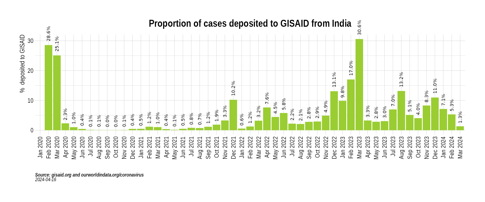

suppressPackageStartupMessages({
library(epicovr)
library(ggplot2)
library(tidyverse)
library(scales)
})
theme_set(EpicovrTheme())Get cases data
indian_state_cases <- GetIndiaConfirmedCasesMonthlyLong()## Warning: `funs()` was deprecated in dplyr 0.8.0.
## Please use a list of either functions or lambdas:
##
## # Simple named list:
## list(mean = mean, median = median)
##
## # Auto named with `tibble::lst()`:
## tibble::lst(mean, median)
##
## # Using lambdas
## list(~ mean(., trim = .2), ~ median(., na.rm = TRUE))
## This warning is displayed once every 8 hours.
## Call `lifecycle::last_lifecycle_warnings()` to see where this warning was generated.## MonthYear State value type
## 1 Mar 2020 India 1635 Confirmed
## 2 Apr 2020 India 33232 Confirmed
## 3 May 2020 India 155781 Confirmed
## 4 Jun 2020 India 395044 Confirmed
## 5 Jul 2020 India 1111273 Confirmed
## 6 Aug 2020 India 1990350 ConfirmedPlot cases for India
ggplot(india_cases, aes(factor(MonthYear), value)) +
geom_bar(stat = "identity") +
# scale_y_continuous(labels = scales::comma) +
scale_y_continuous(labels = label_number_si(accuracy = 0.1)) +
scale_x_discrete(guide = guide_axis(angle = 30)) +
xlab("") +
ylab("Cases per month") +
EpicovrTheme()
Read variant data from GISAID
gisaid_metadata <- ReadGISAIDMetada(path = "~/github/2021_Covid19_surveillance/data/all_metadata/metadata_tsv_2022_03_11.tar.xz")Plot proportion of cases that been deposited from India
gisaid_india <- FilterGISAIDIndia(gisaid_metadata_all = gisaid_metadata)
state_seq_stats <- gisaid_india %>%
group_by(State, MonthYearCollected) %>%
count() %>%
arrange(State, MonthYearCollected) %>%
drop_na() %>%
rename(MonthYear = MonthYearCollected, value = n)
country_seq_stats <- state_seq_stats %>%
group_by(MonthYear) %>%
summarise(value = sum(value)) %>%
mutate(State = "India")
seq_stats <- rbind(country_seq_stats, state_seq_stats)
india_cases_long <- GetIndiaConfirmedCasesMonthlyLong()
india_sequencing_proportion <- CombineSequencedCases(cases_sequenced = seq_stats, confirmed_long = india_cases_long)
india_sequencing_proportion <- india_sequencing_proportion %>%
filter(MonthYear > "Feb 2020") %>%
filter(MonthYear < "Mar 2022")
india_sequencing_proportion$percent_sequenced_toplot <- india_sequencing_proportion$percent_sequenced_collected
india_sequencing_proportion$percent_sequenced_toplot[india_sequencing_proportion$percent_sequenced_toplot > 5] <- 5
india_sequencing_proportion$State <- factor(x = india_sequencing_proportion$State, levels = as.character(GetIndianStates()))
india_sequencing_proportion$MonthYear <- factor(x = india_sequencing_proportion$MonthYear)
PlotSequencedPropHeatmap(india_sequencing_proportion)
india_month_counts <- gisaid_india %>%
group_by(MonthYearCollected, pangolin_lineage) %>%
count() %>%
ungroup() %>%
mutate(State = "India")
india_month_prevalence <- india_month_counts %>%
group_by(MonthYearCollected) %>%
mutate(n_sum = sum(n)) %>%
ungroup() %>%
group_by(MonthYearCollected, pangolin_lineage) %>%
summarise(prevalence = 100 * n / n_sum) %>%
ungroup() %>%
filter(!is.na(MonthYearCollected))## `summarise()` has grouped output by 'MonthYearCollected'. You can override
## using the `.groups` argument.
vocs <- GetVOCs()
india_month_prevalence <- india_month_prevalence %>% mutate(lineage_collapsed = case_when(
pangolin_lineage %in% vocs[["alpha"]] ~ "Alpha",
pangolin_lineage %in% vocs[["beta"]] ~ "Beta",
pangolin_lineage %in% vocs[["gamma"]] ~ "Gamma",
pangolin_lineage %in% vocs[["delta"]] ~ "Delta",
pangolin_lineage %in% c("BA.1.1")~ "Omi-BA.1.1",
pangolin_lineage %in% c("BA.1")~ "Omi-BA.1",
pangolin_lineage %in% c("BA.2")~ "Omi-BA.2",
TRUE ~ "Others"
))
india_month_prevalence$pangolin_lineage <- NULL
india_month_prevalence <- india_month_prevalence %>%
group_by(MonthYearCollected, lineage_collapsed) %>%
summarise_all(funs(sum)) %>%
ungroup()
india_month_prevalence$prevalence <- as.numeric(india_month_prevalence$prevalence)
india_month_prevalence$MonthYearCollectedFactor <- factor(as.character(india_month_prevalence$MonthYearCollected),
levels = as.character(sort(unique(india_month_prevalence$MonthYearCollected)))
)
ggplot(
data = india_month_prevalence,
aes(x = MonthYearCollectedFactor, y = prevalence, fill = lineage_collapsed)
) +
geom_bar(stat = "identity") +
scale_fill_brewer(type = "qual", name = "Pangolin lineage") +
EpicovrTheme() +
xlab("Date collected") +
ylab("% composition of variant") +
labs(caption = "**Source:** gisaid.org<br>") +
scale_x_discrete(guide = guide_axis(angle = 30)) 